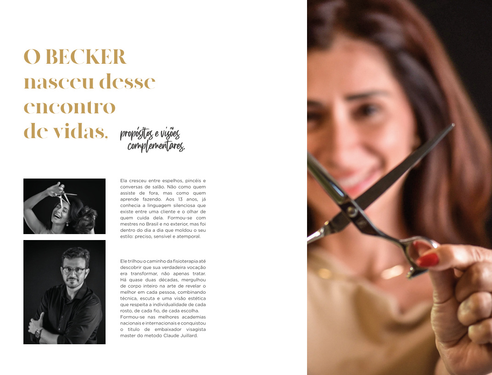

ElaPrecisão, sensibilidade e estética.
Ela cresceu entre espelhos, pincéis e conversas de salão. Não como quem assiste de fora, mas como quem aprende fazendo. Aos 15 anos, já conhecia a linguagem silenciosa que existe entre uma cliente e o olhar de quem cuida dela. Formou-se com mestres no Brasil e no exterior, mas foi no dia a dia que moldou o seu estilo: preciso, sensível e atemporal.